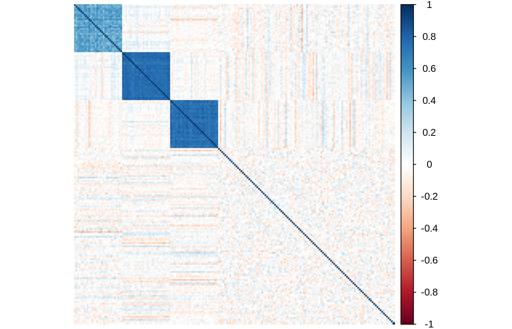
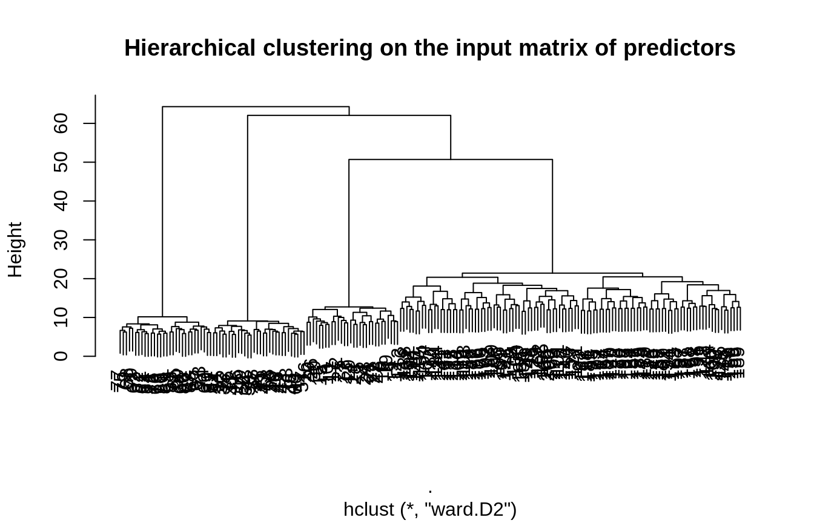
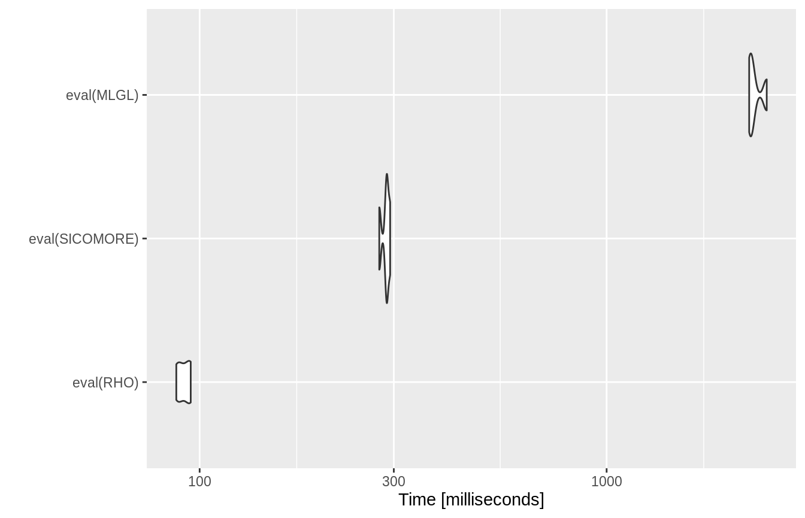

Analysis of a single Data set with SIComORe
Finding a relevant group structure to predict a phenotype
SIComORe team
2020-04-04
Source:vignettes/singleData.Rmd
singleData.RmdThis vignette illustrates how SIComORe can be used to analyze a single data set with correlated predictors related to a phenotype.
Requirements
On top of sicomore, this will require a couple of standard packages tailored for data manipulation, representation or benchmarking:
Statistical Model
SIComORe assumes an underlying linear model to link a phenotype (or response) of interest to a set several matrices of correlated predictors (see Ambroise et al. (2018)). In the case at hand, we only consider a single matrix thus the generative model is
\[\begin{equation*} \mathbf{y} = \sum_{g \in \mathcal{G}} \phi( \mathbf{X}_{g}) \beta_g + \boldsymbol\varepsilon, \qquad \boldsymbol\varepsilon \sim \mathcal{N}(\mathbf{0}_n, \mathbf{I}_n \sigma^2), \end{equation*}\] where
- \(\mathbf{y}\) is a vector of phenotype \(n\) observation,
- \(\boldsymbol\varepsilon\) is a size-\(n\) Gaussian vector of noise,
- \(\mathbf{X}\) is a matrix of predictors with \(n\) rows and \(p\) columns,
- \(\mathcal{G}\) is a latent group structure with \(K\) groups,
- \(\phi\) is a function (typically the mean “in row”) for compressing \(\mathbf{X}_g\) into a vector,
- \(\boldsymbol\beta\) is a vector with \(K\) coefficients (one per group).
SIComORe includes the function getHierLevel to estimate both the underlying group structure \(\mathcal{G}\) and the vector of regression \(\boldsymbol\beta\) from the data \((\mathbf{y},\mathbf{X})\). We detail its use on a simulated example bellow.
Data generation
Group-structured Matrix of predictors
We define a matrix of predictors \(\mathbf{X}\) containing \(p = 200\) columns (or variables) spreaded into a structure pf group \(\mathcal{G} = \{g_k,k=1,\dots,K\}\) with \(K = 113\) groups: 3 groups of 30 variables + 110 groups with a single variable.
grp_size <- c(30, 30, 30, rep(1,110)) K <- length(grp_size) # number of groups p <- sum(grp_size) # the number of variables
We then define a covariance matrix \(\Sigma_X\) the structure of which is faithful to the original grouping of the variables
Sigma <- runif(K,.5,.95) %>% # a vector defining within-group correlation map2(grp_size, ~ matrix(.x, .y, .y)) %>% bdiag() diag(Sigma) <- 1
We then draw \(n = 100\) observations of a centered multivariate Gaussian vector with covariance \(\Sigma_X\):
The matrix of empirical correlations of \(X\) clearly show that the group structure is well embedded in the data:

Phenotype/Response vector
The phenotype is a linear combinaison of the compressed version of the predictors. Here, we use the mean to compressed a group of variables:
grp_ind <- rep(1:K, grp_size) # vector of group indices X_comp <- t(rowsum(t(X), grp_ind)/tabulate(grp_ind))
The vector of regression parameters \(\beta\) is sparse, chosen such that the first two group are predictive:
theta <- rep(0, ncol(X_comp)) theta[c(1,2)] <- runif(2, min=5, max=10) ## simple effects on the first two groups
Finally, the response vector \(y\) is drawn from a linear model. The level of noise is chosen such that the \(R^2\approx 0.75\) on average.
sigma <- 5 epsilon <- rnorm(n) * sigma y <- X_comp %*% theta + epsilon
Adjusting a single hierarchy
Now, we try to recover the correct level of compression only from the original input matrix of predictors and the response vector. We test all the level of a hierarchy obtained by hierarchical clustering with Ward criteria. The grouping is rather obvious in this case and easily recovered by hierarchical clustering:
Retrieving a hierarchy
hierarchy <- X %>% scale() %>% t() %>% dist(method = "euclidean") %>% hclust(method="ward.D2") plot(hierarchy, main = "Hierarchical clustering on the input matrix of predictors")

Variable selection along the hierarchy
SIComORe also includes three alternative methods of selection for prediction of phenotype with grouped correlated structure, on top of the one defined in Ambroise et al. (2018). MLGL (see Grimonprez (2016), Grimonprez et al. (2019)) and the variant \(\rho\)-SIComORe in the spirit of Park, Hastie, and Tibshirani (2007). We try the 3 available options for simultaneously finding and selecting the groups of variables related to the phenotype:
out_rho <- getHierLevel(X, y, hierarchy, choice="lambda.1se", selection="rho-sicomore", mc.cores=1) out_mlgl <- getHierLevel(X, y, hierarchy, choice="lambda.1se", selection="mlgl" , mc.cores=1) out_sicomore <- getHierLevel(X, y, hierarchy, choice="lambda.1se", selection="sicomore" , mc.cores=1) all_res <- rbind( cbind(out_rho$cv.error , method="rho-sicomore"), cbind(out_sicomore$cv.error, method="sicomore"), cbind(out_mlgl$cv.error , method="mlgl") )
The three models show comparable estimated prediction error on the best level of the hierarchy:
ggplot(all_res) + aes(x = lambda, y = mean, colour = method, group = method) + geom_smooth(aes(ymin = mean - sd, ymax = mean + sd), stat="identity") + labs(y = "Mean cross-validation error", x = "Lambda") + coord_trans(x = "log")

The group selected can be reached with the getGrp() methods. For instance,
out_rho$getGrp()
## [[1]]
## [1] 1 2 3 4 5 6 7 8 9 10 11 12 13 14 15 16 17 18 19 20 21 22 23 24 25
## [26] 26 27 28 29 30
##
## [[2]]
## [1] 31 32 33 34 35 36 37 38 39 40 41 42 43 44 45 46 47 48 49 50 51 52 53 54 55
## [26] 56 57 58 59 60
##
## [[3]]
## [1] 91 92 93 94 95 96 97 98 99 100 101 102 103 104 105 106 107 108
## [19] 109 110 111 112 113 114 115 116 117 118 119 120 121 122 123 124 125 126
## [37] 127 128 129 130 131 132 133 134 135 136 137 138 139 140 141 142 143 144
## [55] 145 146 147 148 149 150 151 152 153 154 155 156 157 158 159 160 161 162
## [73] 163 164 165 166 167 168 169 170 171 172 173 174 175 176 177 178 179 180
## [91] 181 182 183 184 185 186 187 188 189 190 191 192 193 194 195 196 197 198
## [109] 199 200Comparison of the computation times between the 3 options
RHO <- expression(getHierLevel(X, y, hierarchy, choice="lambda.1se", selection="rho-sicomore")) SICOMORE <- expression(getHierLevel(X, y, hierarchy, choice="lambda.1se", selection="sicomore" )) MLGL <- expression(getHierLevel(X, y, hierarchy, choice="lambda.1se", selection="mlgl" )) bench <- microbenchmark(eval(RHO), eval(SICOMORE) , eval(MLGL), times = 4)
autoplot(bench)

References
Ambroise, Christophe, Julien Chiquet, Florent Guinot, and Marie Szafranski. 2018. “Fast Computation of Genome-Metagenome Interaction Effects.” arXiv Preprint arXiv:1810.12169.
Grimonprez, Q., S. Blanck, A Celisse, G. Marot, Y. Yang, and H. Zou. 2019. “MLGL: An R Package Implementing Correlated Variable Selection by Hierarchical Clustering and Group-Lasso.” https://cran.r-project.org/package=MLGL.
Grimonprez, Quentin. 2016. “Selection de Groupes de Variables Corrélées En Grande Dimension.” PhD thesis, Université de Lille; Lille 1.
Park, Mee Young, Trevor Hastie, and Robert Tibshirani. 2007. “Averaged Gene Expressions for Regression.” Biostatistics 8 (2): 212–27.